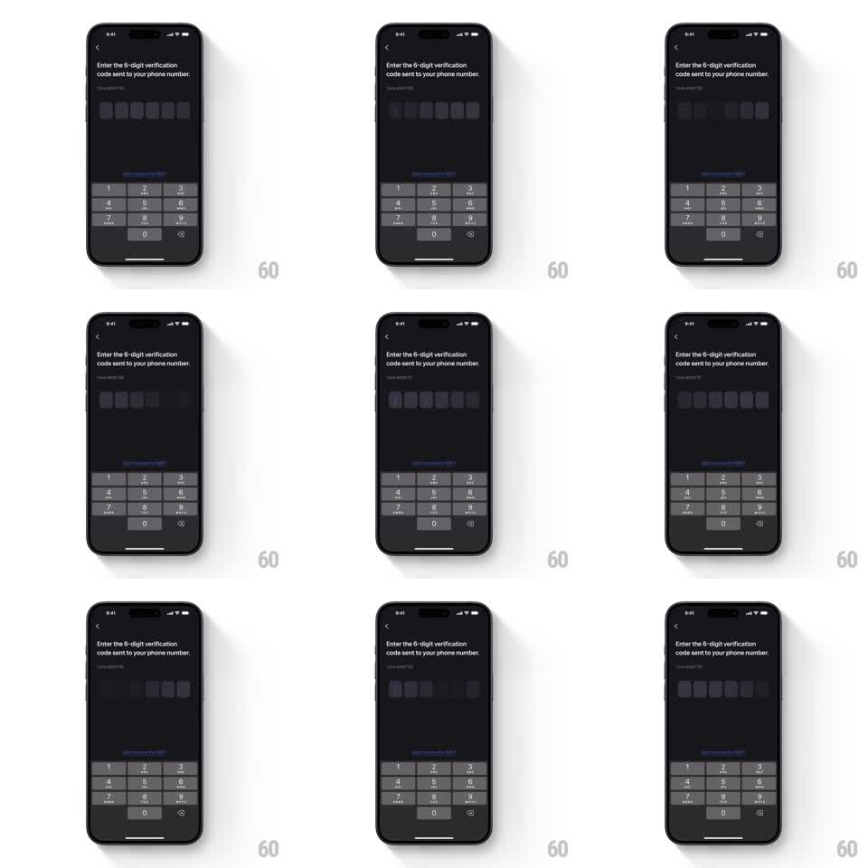

Media
Frame-by-frame

Rebuild this animation 1:1: Toss's OTP idle state - a soft shimmer sweeps continuously across the six empty code boxes, signaling the field is focused and waiting.

Rebuild this animation 1:1: Toss's OTP idle state - a soft shimmer sweeps continuously across the six empty code boxes, signaling the field is focused and waiting. ## Integration Integration: stack-agnostic spec - springs given as stiffness/damping, timed motions as duration + curve; map every value to your framework and animation library of choice. ## Scene Dark screen: "Enter the 6-digit verification code sent to your phone number", a row of six empty rounded code boxes, the resend link, and the numeric keypad. The boxes carry a looping sheen that travels across them left to right. ## Motion spec Pattern: looping shimmer sweep across empty input boxes. - A diagonal highlight band (~60pt wide, 15deg tilt, white at ~12% opacity over the box fill) sweeps across the row of boxes left to right (1.4s, linear). - The sweep treats the six boxes as one surface: the band passes continuously across gaps without restarting per box. - After each sweep, a 900ms pause, then the next sweep begins - roughly one pass every 2.3s. - The first box carries the focus caret (blinks at 530ms); boxes, keypad, and text are otherwise static. ## Calibration - The shimmer is a soft gradient band, not a hard-edged bar - feathered to ~40% at its edges. - Opacity stays low enough that box borders remain visible through the sweep. ## Reduced motion No shimmer; boxes show a static 8% highlight tint. ## Don't miss - The sweep moves across the whole row as a unit - per-box staggered shimmer reads as loading, not focus. - Loop timing is calm; this is an idle cue, not a progress indicator.